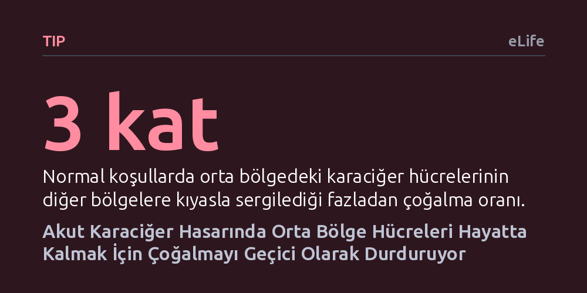

TIP · eLife · 2026-10-27
Araştırmacılar, parasetamole bağlı akut karaciğer hasarının ilk saatlerinde hücrelerin nasıl tepki verdiğini inceledi. Fare deneyleri, orta bölgedeki karaciğer hücrelerinin hayatta kalabilmek adına özel bir gen yoluyla bölünmeyi geçici olarak durdurduğunu ortaya koydu.
Karaciğerin iyileşmesi için hücrelerin hemen çoğalmaya başlaması gerektiği düşünülürken, bu çalışma hücrelerin önce hayatta kalmaya odaklanıp bölünmeyi erteleyerek organın yenilenme kapasitesini koruduğunu gösteriyor.

Parasetamol, dünyada ağrı kesici ve ateş düşürücü olarak en yaygın kullanılan ilaçlardan biridir. Ancak önerilen dozun üzerine çıkıldığında, ilaca bağlı akut karaciğer yetmezliğinin en sık görülen nedeni haline gelir. Karaciğer hücreleri ilacı parçalarken toksik bir yan ürün ortaya çıkar. Bu yan ürün, özellikle karaciğerin merkezi damarına yakın hücrelerde şiddetli hasara yol açarak hücrelerin kontrolsüzce ölmesine (nekroz) neden olur.
Karaciğer, kendini yenileme kapasitesi en yüksek organlarımızdan biridir. Ağır bir toksik hasar meydana geldiğinde, hayatta kalan sağlam hücrelerin hızla bölünerek ölen dokunun yerini doldurması beklenir. Ancak bilim insanları uzun süredir kritik bir ikilemi çözmeye çalışıyordu: Hücreler zehirli bir saldırının hemen ardından aceleyle bölünmeye başlarsa mı daha iyi hayatta kalır, yoksa önce hasarı onarıp bölünmeyi erteleyerek mi?
Önceki çalışmalar, karaciğer lobülünün orta bölgesinde yer alan hücrelerin normal şartlarda yenilenmenin ana yükünü taşıdığını göstermişti. Fakat parasetamol zehirlenmesinin ilk birkaç saatinde bu kritik hücrelerin nasıl tepki verdiği bilinmiyordu. Bu çalışma, hücrelerin erken evrede bölünmeyi bilinçli olarak durdurduğunu ve kendilerini korumaya aldığını ortaya koyuyor.
Araştırmacılar, bu erken tepkiyi gözlemlemek için farelere yüksek dozda parasetamol enjekte etti. Ardından hasarın 3, 6, 12 ve 24. saatlerinde karaciğer dokusunu mikroskop altında inceleyerek hem hasar seviyesini hem de hücre bölünme hızını takip etti. Bölünme göstergesi olan Ki67 proteini incelendiğinde çarpıcı bir durum görüldü: Normalde en hızlı bölünen orta bölge hücreleri, hasardan sonraki ilk saatlerde bölünmeyi aniden bıçak gibi kesti.
Bu duraklamanın nedenini moleküler düzeyde anlamak için uzamsal transkriptomik yöntemi kullanıldı. Bu yöntem, dokunun mikroskobik haritası üzerinde hangi hücrenin hangi geni çalıştırdığını tam konumlarıyla gösteriyor. Analizler, karaciğerin merkezindeki hücreler ölürken, hemen bitişiklerindeki orta bölge hücrelerinde özel bir stres savunma programının devreye girdiğini kanıtladı.
Doz artırıldıkça ölen doku alanı genişliyor ve savunma programı da dalga dalga orta bölgeye doğru kayıyordu. Çünkü merkezi hücreler öldüğünde, arta kalan parasetamolü parçalama görevi zorunlu olarak hemen arkadaki orta bölge hücrelerine biniyordu. Orta bölge hücreleri de toksik yük altında ezilmemek için acil durum protokolünü başlatıyordu.
Peki orta bölge hücreleri bölünmeyi nasıl durduruyordu? Gen düzenleyici ağların analizi, Atf4 ve Chop adlı iki önemli genetik anahtarın eş zamanlı olarak etkinleştiğini ortaya koydu. Normalde hücre ölümünü tetiklediği düşünülen Chop faktörü, bu erken evrede şaşırtıcı şekilde hücreyi öldürmek yerine koruyucu genleri devreye sokuyordu. Hücreler genel protein üretimini kısıp entegre stres yanıtı adı verilen savunma kalkanını kuşanıyordu.
Araştırmacılar Chop proteininin DNA üzerinde nereye bağlandığını haritaladıklarında karşılarına Btg2 adlı gen çıktı. Btg2, hücre döngüsünü durduran bilinen bir fren mekanizmasıdır. Virüs vektörleri kullanılarak fare karaciğerinde Atf4 veya Btg2 seviyesi yapay olarak artırıldığında, karaciğer hasarının ve hücre ölümünün belirgin şekilde azaldığı görüldü.
Tam tersine, gen düzenleme teknikleriyle Btg2 freni gevşetildiğinde yani gen susturulduğunda, hücreler stres altında olmalarına rağmen zamansızca bölünmeye çalıştı. Sonuç olumsuz oldu: Kandaki karaciğer hasar göstergesi olan ALT seviyesi iki katına çıktı ve ölü doku alanı belirgin biçimde genişledi. Bu deney, hasarın ilk saatlerinde bölünmeyi durdurmanın hücrelerin hayatta kalabilmesi için zorunlu bir savunma refleksi olduğunu doğruladı.
Bu bulgular, karaciğer yenilenmesine dair yerleşik bakış açısını dengeliyor. İyileşme süreci sadece çoğalmaktan ibaret değildir; hücrelerin önce fırtınayı atlatması, zehirli maddeleri temizlemesi ve kendi bütünlüğünü koruması gerekir. Erken evrede aceleyle bölünmeye kalkışan hücreler ölmekte, frene basıp hayatta kalmayı seçenler ise organın daha sonraki saatlerde yenilenmesini güvenceye almaktadır. Benzer bir fren mekanizmasının farklı bir kimyasal toksinde de görülmesi, bunun karaciğerin genel bir acil durum refleksi olduğunu düşündürmektedir.
Bununla birlikte çalışmanın önemli sınırları vardır. Araştırma ağırlıklı olarak fare modellerine dayanmaktadır. Ağır karaciğer yetmezliği geçiren hastalardan alınan insan dokusu verileri incelendiğinde, iki hasta arasında belirgin farklılıklar bulunmuştur; hastalardan biri erken stres evresindeyken diğeri çoktan kontrolsüz bölünme evresine geçmiş görünmektedir. Dolayısıyla farelerdeki bu net zaman çizelgesinin insandaki klinik seyirle nasıl örtüştüğü henüz tam olarak aydınlatılmış değildir.
Ayrıca, araştırmacılar bu fren mekanizmasının varlığını gösterse de, hücre döngüsünü durdurmanın hücreyi bizzat ölümden nasıl koruduğunun kesin biyokimyasal ayrıntıları henüz tam olarak kanıtlanmamıştır. Parasetamol zehirlenmesine yönelik yeni tedaviler geliştirilmeden önce, bu savunma kalkanının insan karaciğerinde ne kadar süre aktif kaldığının belirlenmesi gerekecektir.